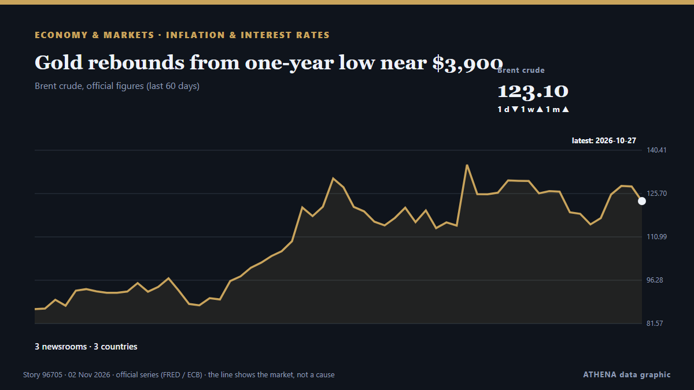

الاقتصاد والمال والأسواق
تُعرض العناوين بالإنجليزية كما نُشرت.
مراقب الأسواق - أرقام رسمية
اتجاه المؤشرات الرسمية للأسواق - صعودًا أو هبوطًا أو استقرارًا - مع آخر قيمة رسمية وتاريخها، وأخبار الأسواق التي تحققت منها ATHENA. أرقام رسمية وليست أسعارًا لحظية.
الطاقة
| يوم | أسبوع | شهر | القيمة الرسمية | |
|---|---|---|---|---|
| Brent crude | ▼ | ▲ | ▲ | $123.10/bblبيانات رسمية بتاريخ 27 أكتوبر 2026 |
| WTI crude | ▼ | ▼ | ▲ | $103.37/bblبيانات رسمية بتاريخ 27 أكتوبر 2026 |
| US natural gas (Henry Hub) | ▲ | ▼ | ▼ | حركة غير معتادة $2.76/MMBtuبيانات رسمية بتاريخ 27 أكتوبر 2026 |
| European natural gas (شهر · 3 أشهر · 12 شهرًا)(شهر · 3 أشهر · 12 شهرًا) | ▲ | ▲ | ▲ | $25.49/MMBtuبيانات رسمية بتاريخ 1 سبتمبر 2026 |
| Coal (Australia) (شهر · 3 أشهر · 12 شهرًا)(شهر · 3 أشهر · 12 شهرًا) | ▲ | ▲ | ▲ | $153.84/tبيانات رسمية بتاريخ 1 سبتمبر 2026 |
الغذاء
| شهر | 3 أشهر | 12 شهرًا | القيمة الرسمية | |
|---|---|---|---|---|
| Wheat | ▲ | ▲ | ▲ | $246.85/tبيانات رسمية بتاريخ 1 سبتمبر 2026 |
أسواق الأسهم الأمريكية
| يوم | أسبوع | شهر | القيمة الرسمية | |
|---|---|---|---|---|
| S&P 500 | ▼ | ▲ | ▲ | الاتجاه فقط (المؤشر © Cboe)بيانات رسمية بتاريخ 29 أكتوبر 2026 |
| Nasdaq Composite | ▼ | ▲ | ▼ | الاتجاه فقط (المؤشر © Cboe)بيانات رسمية بتاريخ 29 أكتوبر 2026 |
الفائدة والمخاطر والدولار
| يوم | أسبوع | شهر | القيمة الرسمية | |
|---|---|---|---|---|
| US 10-year Treasury yield | ▼ | ▲ | ▼ | 4.98 %بيانات رسمية بتاريخ 29 أكتوبر 2026 |
| Market volatility (VIX) | ▲ | ▼ | ▲ | الاتجاه فقط (المؤشر © Cboe)بيانات رسمية بتاريخ 29 أكتوبر 2026 |
| US dollar, broad index | ▬ | ▬ | ▲ | 121.32بيانات رسمية بتاريخ 23 أكتوبر 2026 |
اليورو مقابل العملات الأخرى
| يوم | أسبوع | شهر | القيمة الرسمية | |
|---|---|---|---|---|
| EUR/USD | ▲ | ▼ | ▼ | 1.1172 USDبيانات رسمية بتاريخ 30 أكتوبر 2026 |
| EUR/GBP | ▼ | ▼ | ▼ | 0.8338 GBPبيانات رسمية بتاريخ 30 أكتوبر 2026 |
| EUR/CHF | ▼ | ▼ | ▼ | 0.9194 CHFبيانات رسمية بتاريخ 30 أكتوبر 2026 |
| EUR/JPY | ▼ | ▲ | ▼ | 175.68 JPYبيانات رسمية بتاريخ 30 أكتوبر 2026 |
| EUR/CNY | ▲ | ▼ | ▼ | 7.4326 CNYبيانات رسمية بتاريخ 30 أكتوبر 2026 |
| EUR/TRY | ▲ | ▲ | ▲ | 55.801 TRYبيانات رسمية بتاريخ 30 أكتوبر 2026 |
| EUR/NOK | ▼ | ▼ | ▼ | 10.3120 NOKبيانات رسمية بتاريخ 30 أكتوبر 2026 |
المصادر: إدارة معلومات الطاقة الأمريكية (النفط، الغاز الأمريكي)، صندوق النقد الدولي (الغاز الأوروبي، الفحم، القمح)، وزارة الخزانة والاحتياطي الفيدرالي الأمريكيان (عائد السندات لعشر سنوات، مؤشر الدولار) وCboe (VIX), S&P Dow Jones Indices (S&P 500), Nasdaq (Nasdaq Composite)، عبر FRED (الاحتياطي الفيدرالي في سانت لويس)؛ أسعار اليورو المرجعية © البنك المركزي الأوروبي. الأرقام هي آخر القيم الرسمية مع تاريخها، وليست أسعارًا لحظية. تحسب ATHENA الاتجاهات.
العملات المشفّرة وصناديق المؤشرات والأسهم في الأخبار
- Gold and Silver sell-off continues, Silver to $45.50? EUR/USD at key support, crypto bearish [Video] الخطر 3.9 2 نوفمبر
- Seoul stocks rebound over 2 pct on bargain hunting الخطر 0.9 2 نوفمبر
- Seoul stocks open lower as disappointing tech earnings trigger AI spending woes الخطر 5.3 2 نوفمبر
- AI safety concerns and mounting losses shadow Anthropic’s landmark IPO الخطر 1.2 2 نوفمبر
- Judge dismisses Trump's US$10b lawsuit against Wall Street Journal over Epstein letter الخطر 2.0 2 نوفمبر
- Bulgarian Stock Market Rallies as It Hits Nearly 19-Year High الخطر 0.0 2 نوفمبر
- Palm falls over 1% on weaker rival oils, higher stocks الخطر 0.8 2 نوفمبر
- Korea Exchange sets up plan for shorter settlement for stock trading الخطر 0.6 2 نوفمبر
- Bitcoin price falls below $80,000 again الخطر 1.1 2 نوفمبر
- Nasdaq Falls 2.9% on Fed Hike Fears | Global Economy, Nov 2 الخطر 2.4 2 نوفمبر

التضخم وأسعار الفائدةGold rebounds from one-year low near $3,900
Shafaq News Gold prices bounced on Monday, after a selloff in the previous session, as weaker oil prices tempered inflation concerns, while investors assessed comments from the Federal Reserve for… من Shafaq News (English)
| 20 أكتوبر | 9 |
|---|---|
| 21 أكتوبر | 34 |
| 22 أكتوبر | 82 |
| 23 أكتوبر | 61 |
| 24 أكتوبر | 28 |
| 25 أكتوبر | 29 |
| 26 أكتوبر | 121 |
| 27 أكتوبر | 131 |
| 28 أكتوبر | 129 |
| 29 أكتوبر | 104 |
| 30 أكتوبر | 108 |
| 31 أكتوبر | 25 |
| 1 نوفمبر | 35 |
| 2 نوفمبر | 22 |
Seoul stocks open lower as disappointing tech earnings trigger AI spending woes
Japan’s October factory growth slows as costs pick up: PMI
New orders also increased for a 10th consecutive month. من The Business Times
Australian home prices fall for seventh month
The heightened risk of another imminent rate hike adds to more pain. من The Business Times
Bank of England expected to raise interest rates for first time since 2023
Many economists think rate-setters will want to tackle rising inflation in the UK economy by tightening monetary policy. من The Irish News (Belfast)
Greece Introduces New Gender Pay Transparency Rules
Greece introduces new pay transparency rules requiring employers to disclose salary ranges, address unjustified gender pay gaps and guarantee equal pay. من Greek City Times
Bitcoin price falls below $80,000 again
Cryptocurrency prices continued to decline, with all major digital assets recording losses over the past 24 hours, according to data from CoinMarketCap. من AzerNews
iCOMPASS Unveils KY-AI™ in Hong Kong as Banks Face New AI Governance Expectations
Introduced at Hong Kong FinTech Week, KY-AI™ brings a structured approach to AI oversight, aligned with the accountability, resilience and trust principles of the HKMA’s ART Framework. من Laotian Times
ECB keeps rates on hold as Christine Lagarde announced her resignation
The deposit rate will be left at 2.5% on Thursday, analysts say. من Luxembourg Times
Candidates of Both Parties Pitch Credit Card Interest Rate Caps
Candidates of both parties are advocating caps on credit card interest rates as they campaign for next week’s midterm elections, Bloomberg reported Saturday (Oct. من PYMNTS
OPay Halts $4 Billion NYSE IPO on Listing Day
OPay, a digital financial platform built for emerging markets, has decided to postpone its planned initial public offering due to “an ongoing inquiry by a regulatory authority,” the company said in a… من PYMNTS
Westpac NZ’s profit slips as lending grows
The bank's net interest margin fell to 2.23%, from 2.32%. من BusinessDesk
S&P cuts Meta’s outlook to negative
Meta has been given a negative outlook by S&P Global Ratings due to the company's hefty capital expenditures and concerns about free cash flow. من CNBC World
Treasury minister: ‘I don’t think employers are working people’
A top treasury minister has said she does not think “employers are working people” reigniting fierce debate over whether Labour broke its manifesto pledge not to raise taxes for working people. من City A.M.
Israeli army arrests 5 Palestinians in West Bank raids
Israeli forces raid homes of Palestinians in Nablus, Qalandiya refugee camp, according to Palestinian Prisoners’ Media Office. من Anadolu Agency (English)
Trick or treat? Police respond to more than 100 disturbances over Halloween
In Luxembourg City two individuals threw fire crackers at officers. من Luxembourg Times
CJP backs INDIA bloc's Ramlila Maidan rally, but won't participate in it, says Dipke; cites ‘neutral platform’ identity
Abhijeet Dipke said the CJP supported the cause but would maintain its independent identity. من Hindustan Times
How Kalshi can help the Federal Reserve
Prediction markets may be a win for central banking. من The Economist - Finance & economics
Scam centres relocated from Cambodia raided in Madagascar
Raids against online scam centres in Madagascar have exposed ties with a criminal group that ran similar operations in Cambodia, also duping African nationals via human trafficking, authorities say. من Bangkok Post
FBI blames North Korea for US$6 billion Binance crypto hack
Binance says a security breach impacted about $6.3 billion in assets. من CNBC World
Binance replenishes 90% of assets stolen in security incident
The exchange said it remained on track to resume withdrawal services on Sunday, November 1, within its previously stated timeframe. من The Jerusalem Post
Governor Punjab assures support to addressing key issues of business community
ISLAMABAD: Governor Punjab Sardar Saleem Haider Khan on Saturday assured the business community of the federal capital of his support in resolving its longstanding issues, including the establishment… من Business Recorder
Tech sell-off and Binance hack rattle investors
Amazon and Intel worsen the sell-off with disappointing earnings releases. من CNBC World
Liquidators agree sale of China Evergrande property management unit
Asia Pacific-focused investment firm PAG will buy a majority stake in Evergrande Property Service for HK$4 billion (US$514 million). من CNA (Channel NewsAsia)
WHO statement on notification of withdrawal of the United States
WHO regrets the United States’ notification of withdrawal from WHO – a decision that makes both the United States and the world less safe. من WHO news
Italy demands release of another group of activists detained in West Bank
(ANSA) - ROME, 30 OTT - The Italian Foreign Ministry has called for the "immediate release" of five Italian activists detained in the West Bank on Thursday while accompanying Palestinian farmers… من ANSA English
Bank of Canada maintains the policy rate at 2¼%
The Bank of Canada today held its target for the overnight rate at 2.25%, with the Bank Rate at 2.5% and the deposit rate at 2.20%. من Bank of Canada
Crypto exchanges call for quick moves to bolster defences after Binance heist
A record US$6.3 billion hack of Binance exposes its vulnerability. من The Business Times
Three bonus winter payments worth £550 for DWP state pensioners over 80
State pensioners living in council tax bands A to D will receive a £100 handout. من Birmingham Mail
Warren Buffett hasn't had a drink of water in 50 years. At least, that's what he told Bill Ackman.
Bill Ackman says he once asked Warren Buffett if he drinks water. من Business Insider
As it happened: Binance’s record $6.3B crypto hack
How Binance’s $6.3 billion hack unfolded, from the first onchain alerts to $3 billion in frozen funds and a widening security investigation. من Cointelegraph
Gold Slides to 13-Month Low as Rising Energy Prices Weigh on Markets
LONDON, Oct 30: Gold prices fell below $3,900 an ounce on Friday, hitting their lowest level in 13 months as persistently high global energy prices continued to weigh on precious m... من Arab Times
Chainalysis discloses data breach from "offensive agentic techniques"
Blockchain analytics firm Chainalysis disclosed a data breach after attackers used "offensive agentic techniques" to access internal systems and tools, exposing customer names, email addresses, user… من BleepingComputer
Govt Partners with Control Union Academy to Boost Quality of Uganda's Agricultural Exports
Nasdaq faces $2 trillion wipeout in October as AI spending fears deepen
More than $2 trillion in market value is set to be wiped from the tech-heavy Nasdaq 100 this month, as Big Tech earnings intensified investor scrutiny of whether the billions being poured into… من The Korea Times